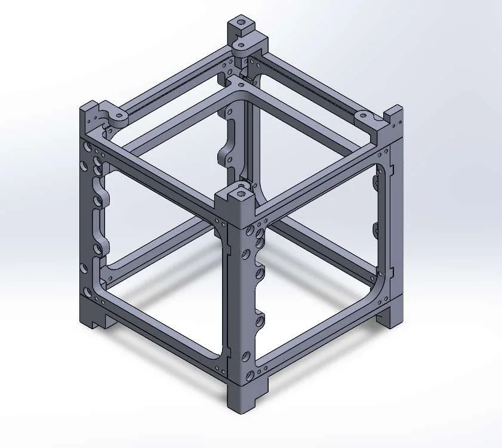
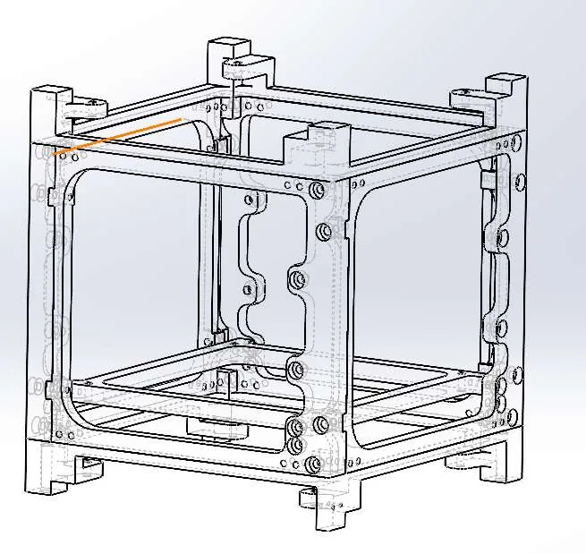

CubeSat structural frame
The load-carrying frame of a CubeSat, modelled part by part in SOLIDWORKS and assembled into a complete structure with defined interfaces for the components it carries.
- Team
- UW Orbital Design Team
- Timeframe
- Sep 2025 to present
- My role
- Mechanical member: frame CAD, assembly, vibration testing
- Tools
- SOLIDWORKS
Overview
UW Orbital is a student design team at the University of Waterloo that builds CubeSats. A CubeSat's frame carries every other subsystem and has to survive launch loads, so its geometry is driven by the components it holds, the fasteners that join it and the way it is assembled.
My task was to turn the team's system-level requirements and component interfaces into a complete, manufacturable frame assembly.
The team's mission or satellite name, and the CubeSat form factor (for example 1U or 3U), if it can be shared publicly.


My contribution
The frame is part of a team effort. What I did myself:
- Modelled the structural frame and each of its individual components in SOLIDWORKS.
- Built and organized the complete mechanical assembly, including the component interfaces and internal threading.
- Worked through fastener placement, assembly access, dimensional constraints and manufacturability as the design developed.
- Refined the design so the structural parts integrate with the specified requirements.
- Perform vibration testing to assess structural and fastener integrity, alongside the multidisciplinary team.
Mission requirements, subsystem design and test planning belong to the wider team.
Constraints and requirements
The design was shaped by five considerations:
- Structural rigidity and load transfer through the rails and side frames.
- Component integration: mounting interfaces for the hardware the frame carries.
- Fastener placement and assembly access, so every fastener can be reached and tightened in sequence.
- Dimensional constraints and clearances set by the system-level requirements.
- Manufacturability, so parts can be machined and assembled in practice.
The governing requirement source (for example the CubeSat Design Specification or the deployer's rail requirements), key envelope dimensions, and the material chosen.
Design process
I modelled the frame as separate parts and brought them together in an assembly so that every interface between parts, and between the frame and the components it carries, is defined in the model. Internal threading is modelled at the fastener locations, which makes the fastening scheme visible in the hidden-line view below.


Design alternatives you considered (for example rail cross-section, cut-out pattern, fastener size or count) and why you chose the current design.
Testing and validation
The team uses vibration testing to assess the structural and fastener integrity of the assembly. I perform this testing with the team.
What was tested (frame, test article or full assembly), the test setup, what you measured or inspected, and the results, if they can be shared. Add photos of the test setup.
Result and takeaways
The result is a complete CubeSat structural assembly in SOLIDWORKS that balances mechanical design, integration, manufacturability and assembly requirements.
One or two lessons learned, for example what you would change after vibration testing or after seeing the parts machined.